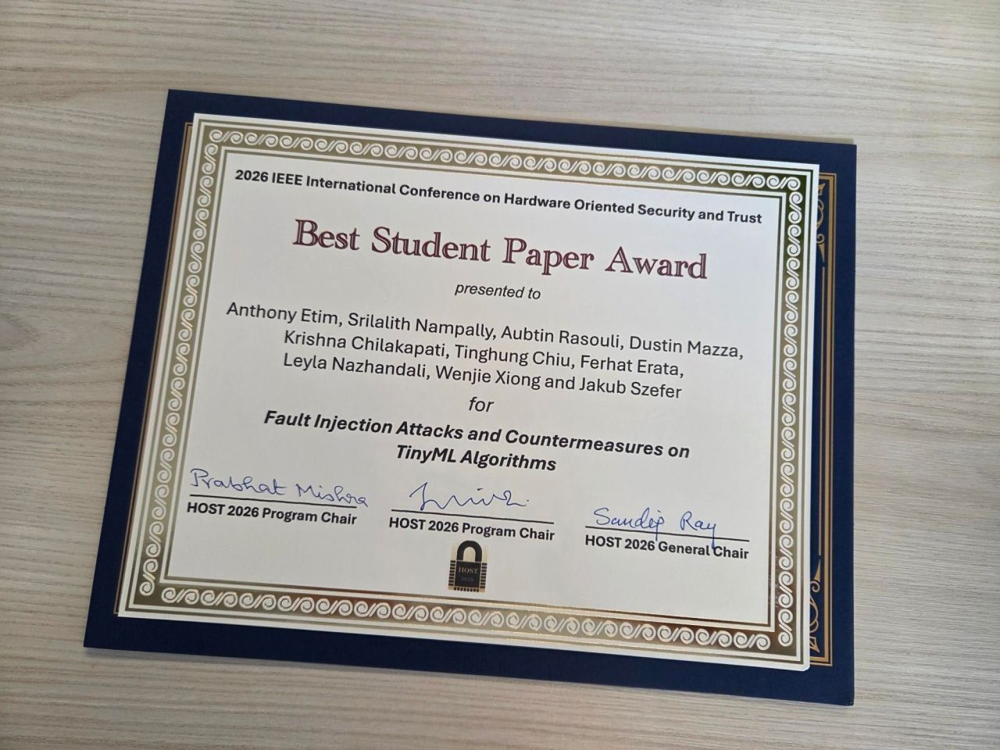

May 2026 · HOST 2026 · Best Student Paper
Best Student Paper at IEEE HOST 2026
Fault Injection Attacks and Countermeasures on TinyML Algorithms received the Best Student Paper Award at the 2026 IEEE International Symposium on Hardware-Oriented Security and Trust.

The paper studies how on-device machine-learning models — the kind that runs inside microcontrollers and embedded sensors — break under fault injection: physical glitching attacks that flip bits during inference and steer the model toward attacker-chosen outputs. The countermeasure design hardens these models against such attacks without sacrificing the tight latency and memory budgets that make TinyML interesting in the first place.
One detail I find pleasing: the ML countermeasure partly relies on a property we discovered in Learning Randomized Reductions for Algorithmic Self-Correction, the ICML 2026 Spotlight. It's the first concrete instance of randomized self-reductions doing useful work outside their original cryptographic context, hardening real systems against fault injection. Watching ideas travel like this — from learned reductions in a theory paper to silicon-level robustness in an embedded-security venue — is one of the more satisfying parts of doing research at the boundary of two communities.
Coauthors: Anthony Etim, Srilalith Nampally, Aubtin Rasouli, Dustin Mazza, Krishna Chilakapati, Tinghung Chiu, Ferhat Erata, Leyla Nazhandali, Wenjie Xiong, and Jakub Szefer. Many thanks to the program committee and to the students who carried the experimental work.